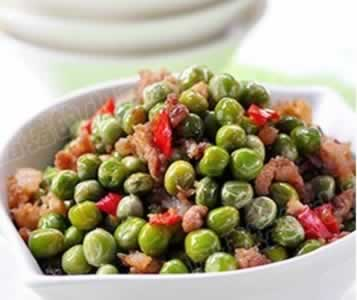
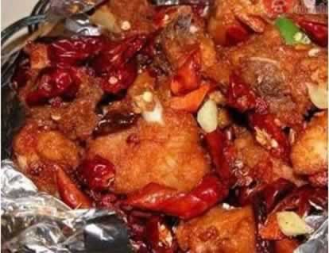
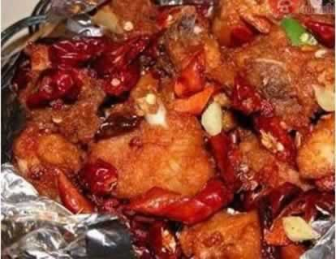

准妈妈每天吃几个核桃最科学？
许多准妈妈都知道坚果富含不饱和脂肪酸，利于胎宝宝的大脑发育。而几乎每位准妈妈在孕期都会选择吃核桃，核桃的确是一种营养价值很高的食物，含大量的维E、亚麻酸以及磷脂等，可作为孕妇的首选零食。核桃可生吃，也可加入适量盐水煮熟吃，或是与薏仁、栗子等一起煮粥吃。
有的孕妇每天吃10到20个核桃，还有的一口气能吃下半斤小核桃。核桃中的脂肪含量很高，吃得过多必然会因热量摄取过多造成身体发胖，进而影响孕妇正常的血糖、血脂和血压。每天吃1到2个核桃或者3到4个山核桃，炒菜时适当减少用油量就可以了。
另外，花生也能促进胎宝宝脑发育，花生的蛋白质含量高达30%，营养可与鸡蛋、牛奶、瘦肉媲美，且易被人体吸收；葵花籽、南瓜籽和西瓜籽都是不饱和脂肪酸的富矿，准妈妈们可以炒熟后食用。
本周推荐尝试食谱1：
肉末炒豌豆
推荐理由：豌豆营养丰富，有补中益气、利小便的功效，是孕妇不可忽视的食物。
食谱原料：
鲜嫩豌豆100 克，葱、姜适量，猪肉50克，盐1克，酱油少许。
制作方法：1、豌豆洗净，猪肉剁成肉糜，待用。
2、油温热后，放入葱、姜煸炒出香味后，放入肉末，加入一点点酱油煸炒，然后放入豌豆，调味后，用旺火快炒，炒熟即可。
本周推荐尝试食谱2：
脆皮纸包鸡

脆皮纸包鸡

推荐理由：鸡肉香醇，含有丰富的蛋白质、碳水化合物及钙、铁等多种营养素，是孕妇食用佳品。
食谱原料：
嫩母鸡1只、核桃仁40克、鸡蛋清80克、云米纸2大张、植物油600克、甜酱50克、胡椒粉少许、白糖25克、盐8克、葱50克；
制作方法：
1、先将加工好的光鸡放在汤锅中煮熟后取出来,剔肉去骨,切制成骨牌片；
2、炒勺加油上火,下入核桃仁,炸熟剁成末,香菜、葱也同时剁成末,然后加入甜酱、胡椒粉、白糖、盐等调料搅拌均匀,将鸡拌好入味；
3、 将云米纸改裁成方块,将入味好的鸡包好,随即将鸡蛋清、粉浆均匀地涂抹于鸡包上；
4、炒勺内倒入油,在旺火上烧开,下入包好的鸡,炸至纸起金黄色即熟。